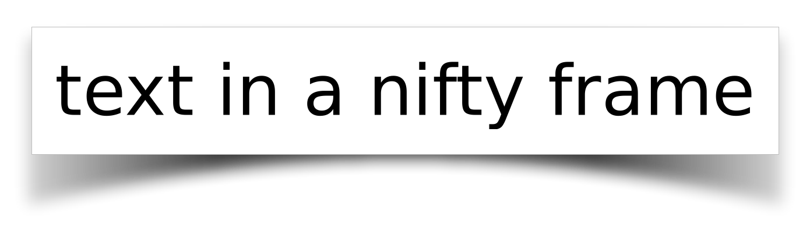

8.9
10 Shadows
| (require pict/shadow) | package: pict-lib |
这些图片变换以各种形状和形式添加阴影或模糊。
procedure
p : pict? h-radius : (and/c real? (not/c negative?)) v-radius : (and/c real? (not/c negative?)) = h-radius
模糊 p 使用一个迭代的盒式模糊,近似于高斯式模糊。
h-radius 和 v-radius 参数分别控制模糊的水平和垂直成分的强度。
它们是以图片单位为单位的,可能不直接对应于屏幕像素。
blur 函数的工作比例为
(* (pict-width p) (pict-height p))
Examples:
Added in version 1.4 of package pict-lib.
procedure
(shadow p radius [ dx dy #:color color #:shadow-color shadow-color]) → pict? p : pict? radius : (and/c real? (not/c negative?)) dx : real? = 0 dy : real? = dx color : (or/c #f string? (is-a?/c color%)) = #f shadow-color : (or/c #f string? (is-a?/c color%)) = #f
通过将 p 叠加在 p 的模糊版本上,创建一个阴影效果。
阴影与 p 的偏移量为 (dx, dy) 单位。
如果 color 不是 #f, 前景部分就是 (colorize p color); 否则就是 p 。 如果 shadow-color 不是 #f, 阴影部分是通过模糊化 (colorize p shadow-color) 产生的; 否则就通过模糊化 p 来产生。
产生的图片具有与 p 相同的边界框。
Examples:
> (inset (shadow (text "shadow" null 50) 10) 10) > (inset (shadow (text "shadow" null 50) 10 5) 10)
> (inset (shadow (text "shadow" null 50) 5 0 2 #:color "white" #:shadow-color "red") 10)
Added in version 1.4 of package pict-lib.
procedure
(shadow-frame pict ... [ #:sep separation #:margin margin #:background-color bg-color #:frame-color frame-color #:frame-line-width frame-line-width #:shadow-side-length shadow-side-length #:shadow-top-y-offset shadow-top-y-offset #:shadow-bottom-y-offset shadow-bottom-y-offset #:shadow-descent shadow-descent #:shadow-alpha-factor shadow-alpha-factor #:blur blur-radius]) → pict? pict : pict? separation : real? = 5 margin : real? = 20 bg-color : (or/c string? (is-a?/c color%)) = "white" frame-color : (or/c string? (is-a?/c color%)) = "gray" frame-line-width : (or/c real? #f 'no-frame) = 0 shadow-side-length : real? = 4 shadow-top-y-offset : real? = 10 shadow-bottom-y-offset : real? = 4 shadow-descent : (and/c real? (not/c negative?)) = 40 shadow-alpha-factor : real? = 3/4 blur-radius : (and/c real? (not/c negative?)) = 20
用一个长方形的框架围绕着 pict ,投下一个对称的 "卷曲的纸" 阴影。
pict 是垂直附加的,它们之间有 separation 空间。 它们被放置在一个纯 bg-color 的矩形背景上,四边都有 margin 空间。 一个 frame-color 和 frame-line-width 的框架被添加到矩形周围, 除非 frame-line-width 是 'no-frame 。 矩形投下的阴影向左右两边延伸 shadow-side-length , 从矩形顶部的 shadow-top-y-offset 开始, 延伸到矩形底部中央的 shadow-bottom-y-offset , 在两侧还有一个额外的 shadow-descent 。 阴影是用线性渐变画的; shadow-alpha-factor 决定了它在中心的密度。 最后,阴影通过 blur-radius 进行模糊处理;之前的所有测量都是模糊前的测量。
Example:
> (shadow-frame (text "text in a nifty frame" null 60)) 
Added in version 1.4 of package pict-lib.